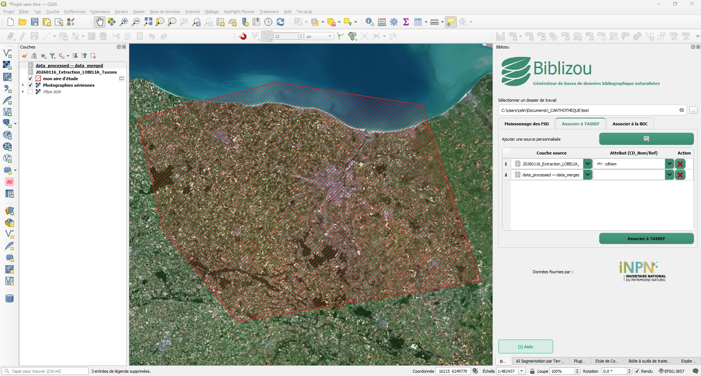
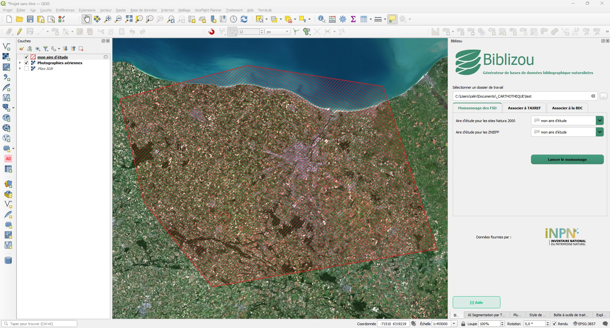
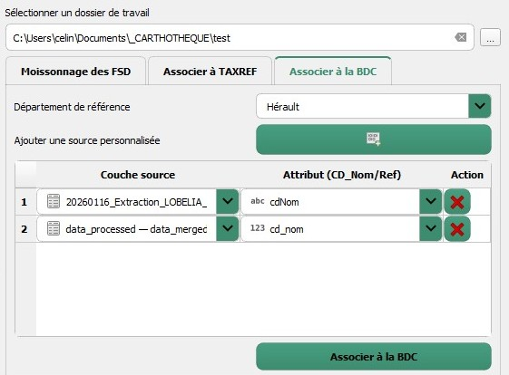

Biblizou
Un plugin Qgis
Biblizou est un plugin open-source exploitant les ressources de l'INPN et des SINP régionaux,
destiné à simplifier et centraliser la collecte de données bibliographiques habitats, faune et
flore,
pour les agents du domaine de la biodiversité.
Centraliser, synthétiser, simplifier

Un interface simple

Module FSD
Moissonnage automatique des données issues des Formulaires Standards de Données (FSD)
des sites ZNIEFF et Natura 2000 intersectant l'aire d'étude choisie.
* Création de tables de synthèse pour les habitats, la faune et la flore par types
de zonages du patrimoine naturel.
* Création de tables de synthèse sur les sites Natura 2000 et Znieff, intégrant un
champ popup_HTML pour vos rapport et vos atlas !
Module TaxRef
Enrichissement taxonomique automatique des espèces via l'API TAXREF de l'INPN.
* Récupération du nom valide, du rang taxonomique et de la position systématique
pour chaque code CD_NOM/CD_REF.
* Fiabilisation des listes d'espèces en amont des analyses, pour repartir sur un
référentiel taxonomique à jour et harmonisé.

Module base de connaissance
Enrichissement automatique des statuts de protection et de conservation des espèces
via l'API INPN.
* Ajout des statuts réglementaires (protections nationales, régionales,
départementales) et des niveaux de menace des listes rouges (UICN).
* Création de tables de synthèse par groupes taxonomiques.
Installer le plugin
C'est tout comme d'habitude !
Par QGIS
Activer Biblizou dans Extensions → Gérer et
installer les
extensions → Toutes.
Par Github
- Télécharger ou cloner le dépôt.
- Déplacer le dossier
biblizoudans le répertoire des extensions QGIS :- Windows :
%APPDATA%\QGIS\QGIS3\profiles\
default\python\plugins - Linux :
~/.local/share/QGIS/QGIS3/profiles/default
/python/plugins
- Windows :
- Activer Biblizou dans
Extensions→Gérer et installer les extensions→Installées.
Contribuer
Ce projet est collaboratif, vous pouvez le rejoindre !
Par contact direct
Envoyez moi un courriel ou un message sur Linkedin
francois.botcazou@proton.me
Workflow Git
Ouverture d'une Issue pour signaler un bug ou proposer une évolution, ou soumission directe d'une Pull Request (PR).
Contributeurs-ices :